Flow control benchmark: Endpoint Picker v0.9.0
Can one shared model pool protect priority traffic across different request shapes and a larger model pool?
Answer: Flow control protected higher-priority realtime traffic, and separate tests showed which admission setting fit each workload shape.
Higher-priority realtime traffic stayed faster across four production-shaped scenarios.
Three scenarios met the repeat-stability gate. Batch isolation showed the same ordering in every repeat, but its latency spread was too wide for a stable point estimate.
Business questions
| Business question | Answer | Evidence |
|---|---|---|
| Can realtime and lower-priority traffic share the same GPU? | Higher-priority realtime traffic stayed faster in all four scenarios; three met the repeat-stability gate, while batch isolation remained directional evidence. | Production traffic |
| Which detector produced lower realtime latency? | Request-count admission kept realtime p95 TTFT lower than queue-depth detection in both matched production scenarios. | Detector comparison |
| When should admission count requests, tokens, or backend pressure? | Count requests for similarly sized, latency-sensitive traffic; count input tokens when prompt sizes vary materially; use queue depth or KV-cache pressure as reactive backend signals. | Admission guide |
| What does headroom change? | It prevents lower-priority work from consuming the final portion of the selected admission limit, leaving room for higher-priority bursts. | Headroom |
| How much can running batch interfere with realtime traffic? | Under request-count admission, running batch increased realtime p95 TTFT from 133 ms to 15,378 ms. | Batch interference |
| Can realtime latency be protected after batch starts? | Reserved capacity kept realtime p95 TTFT near its realtime-only reference, and experimental eviction safely retried interrupted batch work. | Eviction and retry |
| Should admission count requests or input tokens? | Request count produced lower realtime latency, while input-token admission lowered long-context and batch latency in the mixed workload. | Mixed workload |
| Does the service recover after repeated surges? | The queue drained after both surges and every request completed. | Long stability |
| Does per-GPU throughput hold as the model pool grows? | Served throughput per GPU stayed within 0.6% from one to four model replicas. | Model-pool scaling |
| Where did prefix-aware routing help most? | Premium chat improved most, with 22% lower median p95 TTFT; broader gains were limited because both replicas already had about a 74% cache-hit rate, while affinity routing increased route imbalance and long-context latency. | Prefix routing |
How the configuration was selected
Two layers were tuned before production traffic: the Endpoint Picker decides what may enter, and vLLM decides how much work may run.
These sweeps selected a starting configuration for the production tests. vLLM limits control how much work runs at once; Endpoint Picker limits control when new work queues. Tighter admission reduced realtime latency by shifting more waiting to lower-priority work.
vLLM active-request limit: 128 kept tail latency lower
Allowing 192 instead of 128 active requests added 1.4 requests/s, while p99 TTFT rose from 1,888 to 2,613 ms.
vLLM token budget: 8,192 balanced latency and throughput
The 8,192-token budget produced the highest throughput and lowest p95 TTFT among the three tested settings.
Endpoint Picker request limit: 128 reduced first-token latency
Limiting in-flight requests to 128 reduced p95 TTFT by 363 ms with 2.9% less throughput than the 160-request limit.
Waiting-queue threshold: eight queued requests produced lower TTFT
Activating flow control at eight waiting requests lowered p95 TTFT by 256 ms and throughput by 1.6% versus depth five.
Lower request limits protected premium latency but made standard traffic wait longer
The 48-request limit produced the lowest premium p95 TTFT. Increasing the limit admitted more standard work sooner, but premium latency rose.
KV-cache thresholds activated flow control as model memory filled
The 0.8 threshold produced lower p95 TTFT than 0.75, while both thresholds were slower than the flow-control-off calibration.
Token-count admission handled mixed request sizes better than the output estimate
Counting exact prompt tokens served 21.4 requests/s; adding the output estimate reduced throughput to 6.8 requests/s.
concurrencyMode: tokens: it estimates load from prompt size instead of treating every request equally. Request count and exact input tokens have three matched repeats.Selected settings
| Layer | Setting | Use |
|---|---|---|
| vLLM execution | 128 maximum sequences; 8,192 maximum batched tokens | Limits active requests and the token budget per scheduler step |
| Endpoint Picker admission | 128 in-flight requests; 10% headroom | Selected for priority tiers, consolidation, and fairness |
| Batch isolation | 128 in-flight requests; 15% headroom | Keeps more admission capacity available during the batch surge |
| Size-aware option | Exact input-token count | Accounts for prompt size when request counts misstate load |
Choosing an admission signal
The admission signal determines when the Endpoint Picker stops sending more work. The right signal depends on whether request count, prompt size, backend queueing, or model-memory pressure best represents the workload.
Headroom protects burst access
Headroom withholds part of the configured request or token limit from lower-priority work. Increase it when higher-priority bursts need more immediate admission; the tradeoff is less capacity for lower-priority work. The accepted packages tested 0%, 10%, 15%, and 25% for different workloads, so none is a universal default.
Headroom is the standard v0.9 admission margin. The separate experimental eviction benchmark used a different reserved-capacity policy.
Production scenario benchmarks
Can the selected configuration preserve priority and fairness under matched production traffic?
Priority tiers
Higher-priority tiers stayed lower while batch absorbed the longest wait.
Batch isolation
Realtime stayed faster than batch in every repeat, but the realtime result varied too much for a stable point estimate.
Consolidation
Both realtime tenants stayed below 600 ms during the standard burst.
Same-priority fairness
Both peers stayed below 700 ms while the burster absorbed most of the delay.
Each chart shows median surge p95 TTFT across three repeats. Flow control was engaged and policy queues were active in every retained run.
Traffic sent during each surge
Each plot shows requests sent per second from 60 to 210 seconds and uses its own labeled y-axis range. The similar shapes are intentional: every scenario used the same surge window so differences in latency reflect the traffic mix and policy behavior. Prefix caching was off.
Which admission signal protected realtime latency sooner: in-flight requests or the vLLM waiting queue?
The plots compare request count and queue depth with the same prompts, traffic, model, GPU, and three repeats. Token-count results appear under Workload behavior.
Consolidation: realtime p95 TTFT by admission signal
Request count acted before a vLLM queue formed; both realtime tenants remained near 0.5 seconds.
In-flight requests: limit 128
vLLM waiting queue: threshold 2
vLLM waiting queue: threshold 5
Same-priority fairness: peer p95 TTFT by admission signal
Request count preserved both peers near 0.5 seconds while one same-priority tenant generated the surge.
In-flight requests: limit 128
vLLM waiting queue: threshold 2
Answer: In both production comparisons, the in-flight request limit protected realtime latency sooner. Median p95 TTFT remained near 0.5 seconds; waiting-queue detection reacted after backend queueing began, and median p95 TTFT rose to roughly 4.5–5.1 seconds.
Workload behavior
Request size, response length, and work already running inside vLLM changed which admission setting worked best.
Batch interference can sharply increase realtime latency
Realtime p95 TTFT rose from 133 ms to 15,378 ms after running batch occupied vLLM capacity.
The agentic workload produced higher TTFT while per-token latency stayed similar
The agentic test used larger prompts, longer outputs, and a lower request rate. It recorded higher TTFT than chat, but this comparison does not isolate one cause.
Surge p95 TTFT (ms)
Surge p95 TPOT (ms/token)
Admission method changed which priority absorbed the wait
Request count lowered premium p95 TTFT; input-token admission produced more even latency across tiers.
Use request count when premium latency is the first objective. Test input-token admission when more even service across request sizes matters.
Exact input-token admission did not consistently improve long-context TTFT
Across eight paired seeds, neither admission method was consistently faster.
Batch eviction and retry (experimental build)
Reserved capacity held realtime p95 TTFT near 342 ms (reference 342 ms, batch without protection 561 ms, reserved capacity 341 ms, eviction and retry 348 ms). Evicted batch requests were retried; each job produced one final result. The report below covers four matched scenarios, the retry path, and a searchable 12-run database.
Scale, recovery, and routing
The selected configuration was tested across larger model pools, repeated surges, and cache-aware routing.
Per-GPU throughput held as the model pool grew
Served RPS per GPU varied by at most 0.6% across one, two, and four replicas.
Realtime latency recovered after both sustained surges
Flow control engaged twice; final p95 TTFT returned to 290 ms from a 299 ms baseline, with zero preemptions.
Prefix-aware routing helped some workloads but not the full mix
The tested prompts did not create enough additional prefix reuse to offset uneven routing: realtime and batch improved, while standard long-context traffic slowed.
Random routing remains the reference setting for this workload because prefix-aware routing did not improve latency consistently across tiers.
Method and claim boundaries
| Area | Method | Boundary |
|---|---|---|
| Production scenarios | Open-loop Poisson traffic, noisy sinusoidal phases, three repeats, cache off | One H100 and one model replica |
| Detector comparison | Three matched repeats for request count and queue depth | Descriptive medians and ranges; queue-depth-5 fairness remains calibration-only |
| Calibration sweeps | Closed-loop fixed concurrency | Configuration selection; production traffic carries the latency claim |
| Scale | One Endpoint Picker with one, two, and four model replicas | Scope: one Endpoint Picker |
| Prefix routing | Two model replicas, cache on, shared-prefix traffic | High repeat variance; no default change |
| Metrics | Requests, policy queues, vLLM running and waiting, KV cache, preemptions, routes | Absolute latency depends on model, hardware, request shape, and load |
Evidence packages
Each package includes configuration, request data, traffic samples, system metrics, proof gates, and claim limits.
Engine capacity and configuration
128 maximum sequences and 8,192 batched tokens provided the tested balance; higher sequence limits added little throughput and increased output-token latency.
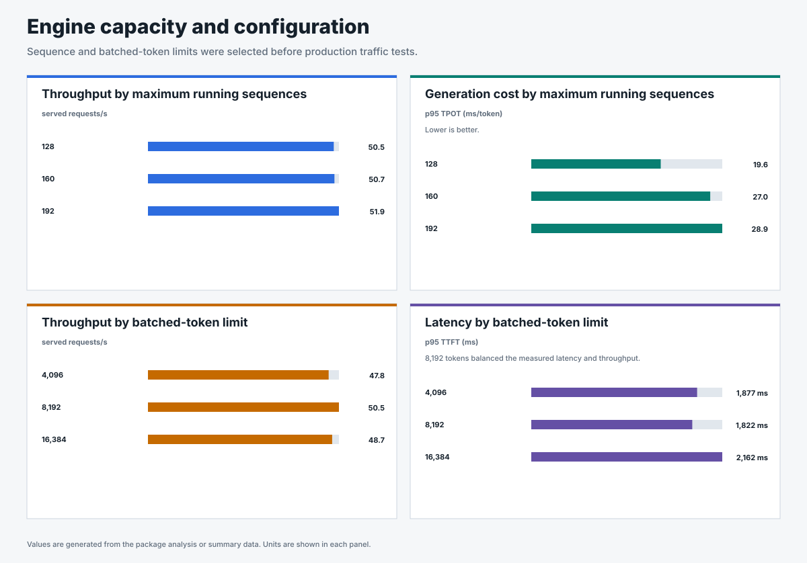
Request and token admission
In this one-GPU calibration, a 128-request cap preserved lower TTFT with a small throughput tradeoff; input-token admission changed the tradeoff for mixed sizes.
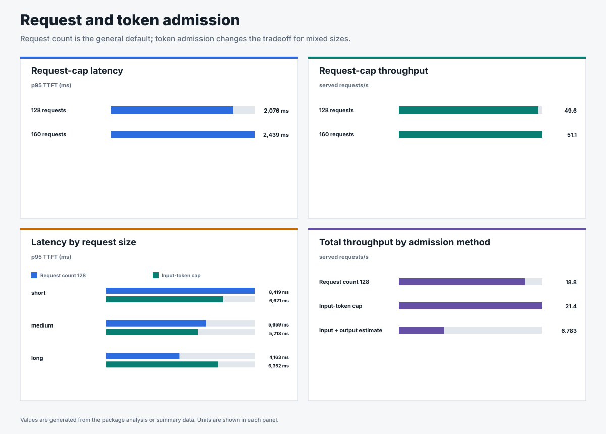
Utilization detector calibration
Queue depth reacts to requests waiting inside vLLM; KV-cache thresholds react to memory pressure. Both need workload-specific calibration.
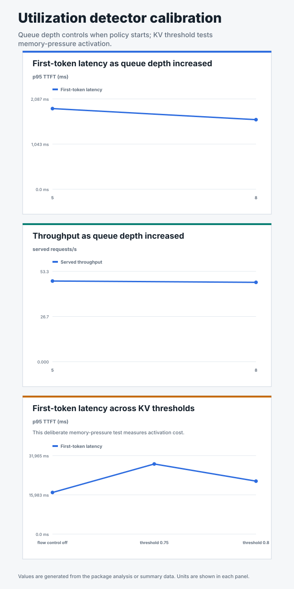
Request-concurrency priority tuning
The 48-request limit produced the lowest premium p95 TTFT in this earlier two-repeat study, while tighter limits made standard traffic wait longer.
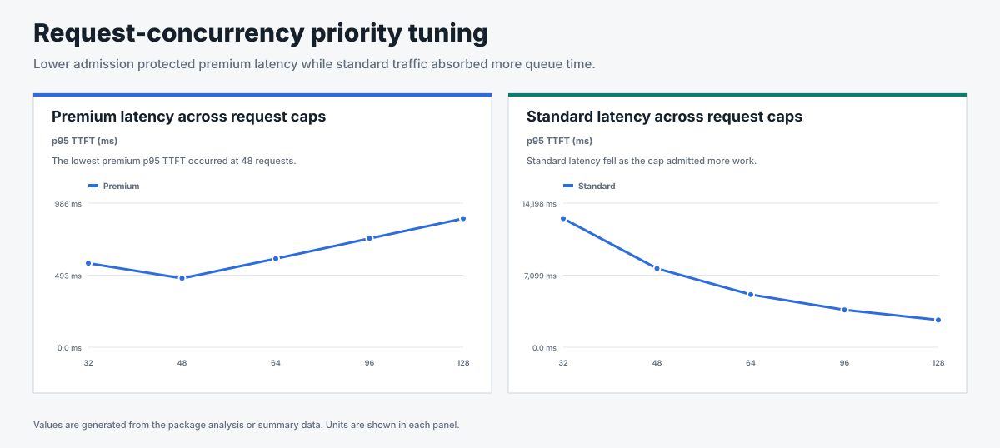
Production scenarios
Higher-priority realtime traffic stayed faster across four traffic patterns; three scenarios met the repeat-stability gate.
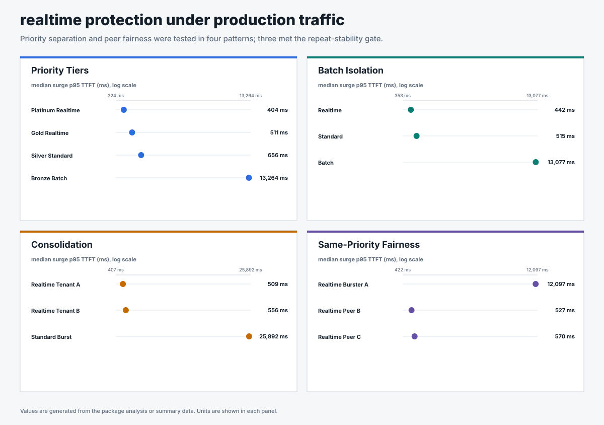
Batch interference
Without protection for work already running in vLLM, batch increased realtime median p95 TTFT from 133 ms to 15,378 ms.
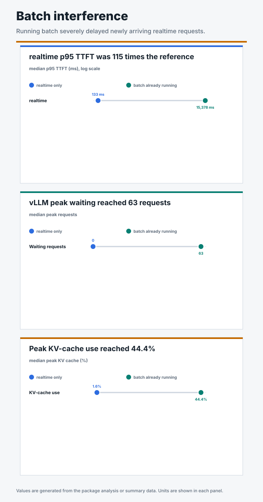
Selected workload shapes
Every chat and agentic request completed; the larger, lower-rate agentic shape recorded higher first-token latency.
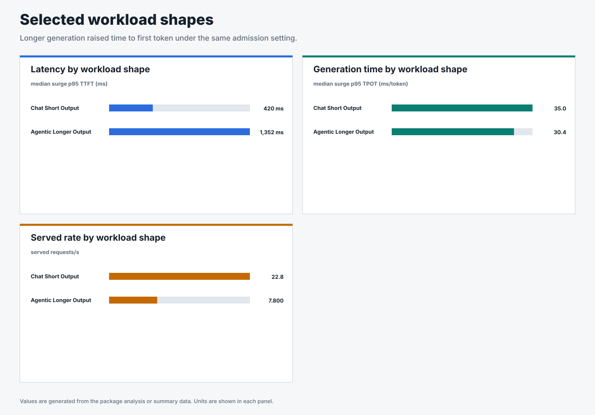
Mixed production workload
Request count lowered realtime latency; input-token admission lowered long-context and batch latency under the same mixed traffic.
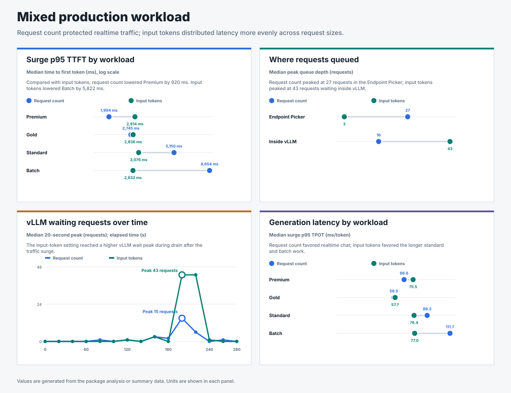
Long-context admission
Exact input-token admission detected large-request pressure, but it did not produce a statistically significant realtime TTFT improvement across eight paired seeds.
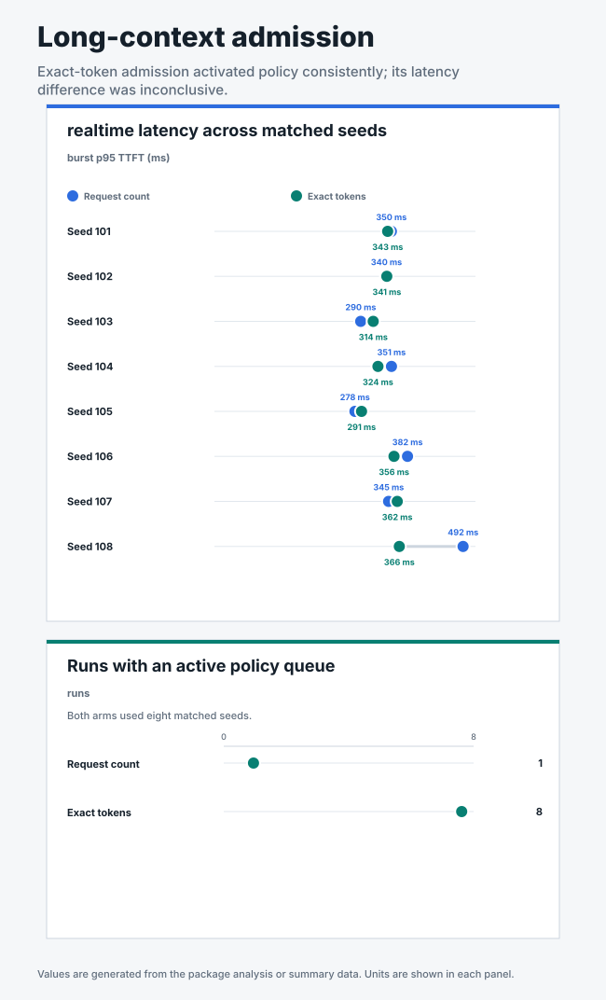
Model pool scaling
Served throughput per GPU stayed within 0.6% from one to four replicas; the four-replica runs served every offered request.
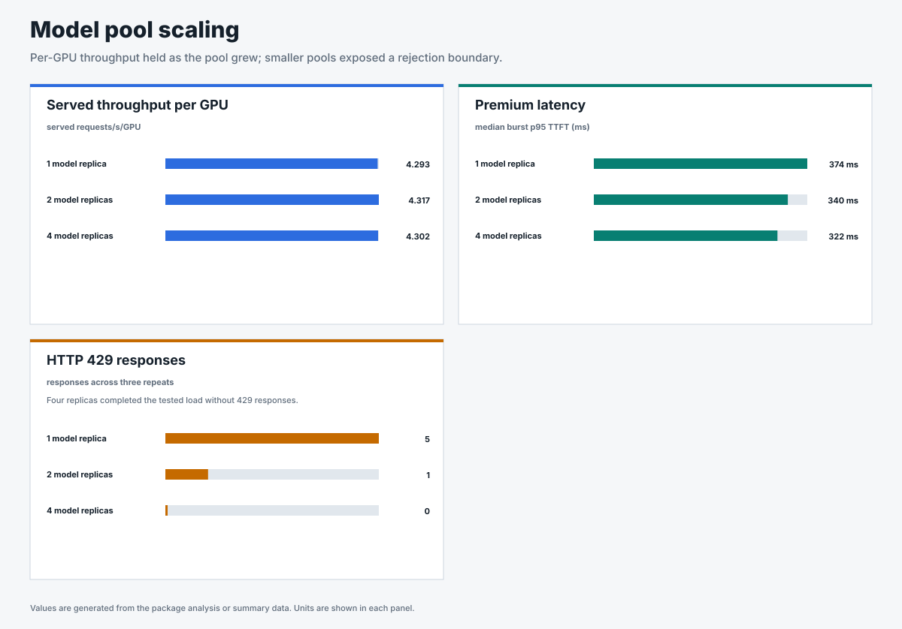
Long stability
The queue drained after both surges, realtime latency returned to its earlier range, and all 14,889 requests completed.
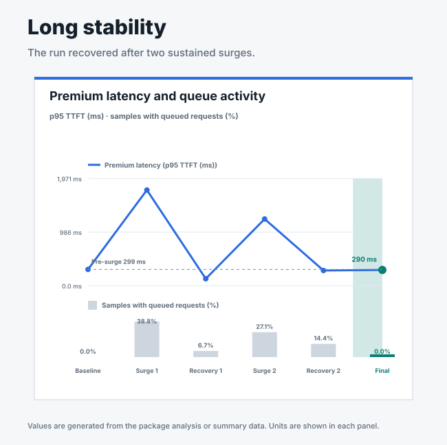
Prefix-cache routing
Premium chat improved most. Broader gains were limited because cache hits stayed flat while affinity increased route imbalance and long-context latency.
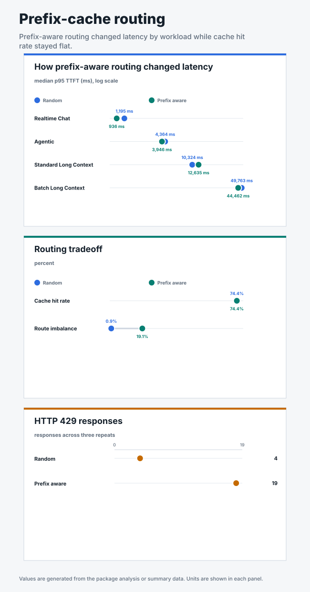
Experimental batch eviction and retry
Reserved capacity restored realtime p95 TTFT near its reference. Interrupted batch work was retried to completion.
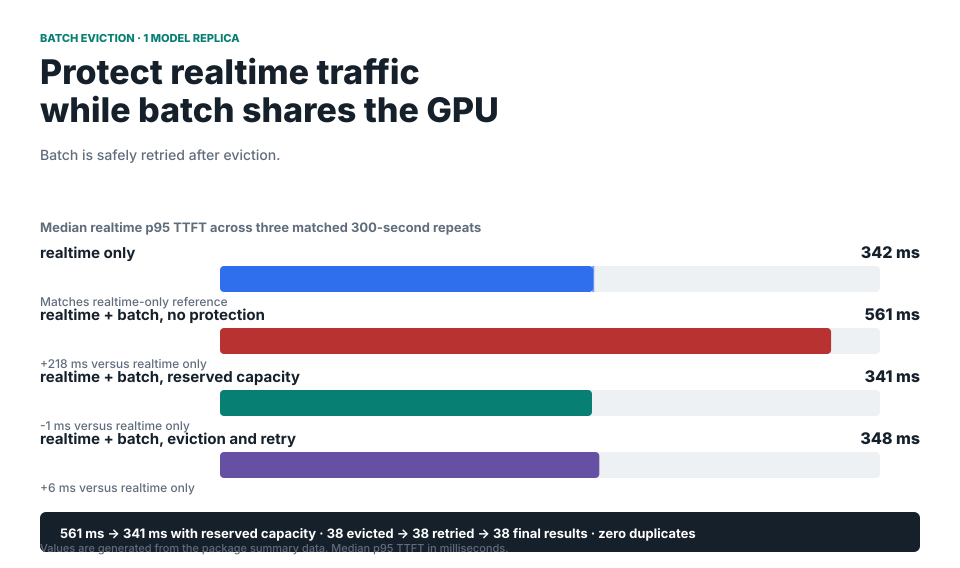